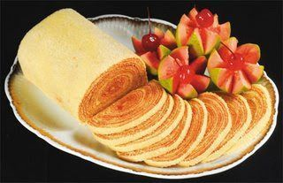
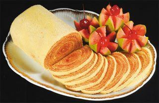

56 ideias de Café da manhã: fáceis, saborosos e criativos em 2021 | receitas, culinaria, café da manhã
2021.06.21 21:33
Café da manhã: fáceis, saborosos e criativos
Coleção de A Receitaria • Atualizado pela última vez Há 6 dias
56 Pins • 1,21M seguidoresNossas melhores ideias para o café da manhã para você começar bem o dia. Encontre inspiração para um café da manhã delicioso, saudável e fácil de fazer.
Facas Doce Receitas Cereal Massa Carne Verduras Café Da ManhãFaça o seu próprio creme doce para passar no pão
Faça o seu próprio creme doce para passar no pão: creme de amêndoa com chocolate branco, creme de chocolate com amendoim e creme de framboesa com castanha de caju. #creme #pao #cremecaseiro #cremedoce
Receitas Com Bacon Receitas Café Da Manhã Café Da Manhã Com Bacon Petiscos Comidas Saudaveis Receitas Com Massa Folhada Receitas De Aperitivo Panqueca Fazendinha4 receitas com bacon criativas para o café da manhã
4 opções originais de café da manhã com bacon. E porque adoramos receitas com massa folhada, também a integramos nestas receitas. #bacon #ovos #cafedamanha #massafolhada #queijo
Recheio De Chocolate Massa De Chocolate Croissants Recheados Receitas Deliciosas Receitas Doces Sobremesas Comidas Saudaveis Rabanadas Massa FolhadaCroissants bicolores com recheio de chocolate
Como todos sabemos, chocolate nunca é demais. É por isso que você deve experimentar estes croissants recheados com chocolate, feitos com massa de chocolate e massa folhada. #croissants #croissantsdechocolate #massafolhada #croissantsrecheados
Bolo Mármore Confeitaria Artística Rosquinhas Bolo Salgado Biscoito Ou Bolacha Comida Caseira Receitas Gostosas Petiscos Bolachas6 ideias com massa marmorizada com chocolate
Melhor do que um bolo de mármore clássico! Preparamos uma massa marmorizada e transformamos em vários petiscos doces. Transforme a massa marmorizada em lindos docinhos. #docinhos #massamarmorizada #cafedamanha #lanche #massadoce #massamarmorizadacomchocolate
Pão De Milho Doce Geléia De Ameixa Bolo De Carne Moida Pao De Milho Sabores Doces Pão Recheado Receitas Gostosas Receitas Deliciosas Bolo Fofinho SimplesPão de milho doce e fofo com geleia de ameixa
O pão de milho no estilo norte-americano é conhecido principalmente nos estados do sul dos Estados Unidos. Na nossa receita, no entanto, não o prepararemos da forma tradicional. Vamos misturar os grãos de milho, misturar com o leite e colocar a mistura na massa. Assim, ela ganhará o sabor doce do milho. Em seguida, vamos rechear a massa com geleia de ameixa e fazer um rolo com ela. No final teremos um pão de milho fofo e perfeito para um café da manhã. #paodemilho #paodemilhodoce…
3:51 Receitas De Tortas Doces Receitas Doces E Salgadas Receitas Gostosas Receitas Saborosas Sobremesas Frias Doces E Sobremesas Doces E Salgados Novas Receitas Receitas RápidasPãezinhos de passas
É muito fácil fazer pãezinhos de passas #paodoce #paocaseiro #paodepassas
Pão De Passas Bolo De Milho Fit Receitas De Aperitivo Receitas Saborosas Lanches Energéticos Sequilhos De Leite Condensado Biscoitos De Azeite Bolos Individuais Melhor Receita De PãoPãezinhos de passas
É muito fácil fazer pãezinhos de passas #paodoce #paocaseiro #paodepassas
13:55 Receitas De Sumos Receitas Orgânicas Receitas De Petiscos Receitas Gostosas Receitas Saborosas Receitas Maravilhosas Receitas Divertidas Ideias De Brunch Receita Com OvosIdeias para o brunch
15 deliciosas receitas para o brunch e o café da manhã #brunch #cafedamanha #receitacomovos #crepes
Receitas De Sumos Receitas Café Da Manhã Receitas De Petiscos Receitas Diferentes Receitas Interessantes Doce De Maçã Pratos Rapidos Ideias Para O Jantar Comidas SalgadasBrunch: 15 receitas
Um brunch é uma mistura de café da manhã e almoço e é muito popular em muitos países, onde muitos restaurantes oferecem opções muito completas, que variam de ovos e panquecas a saladas e frutas frescas. Se você é fã de brunch, especialmente no final de semana, definitivamente deveria dar uma olhada nas nossas 15 receitas. #brunch #receitasdebrunch #cafedamanha
Ovos Fritos Ovo Cozido Doces E Salgados Receitas Salgados Ovo Perfeito Ovo Poche Sanduíches Para Festa Como Fazer Ovo Bolinha De QueijoComo fazer ovos perfeitos
4 dicas para fazer ovos fritos, poché, cozidos e mexidos. Se você acha que sua habilidade para fazer ovos ainda precisa melhorar, as nossas dicas serão muito úteis. #ovo #ovosperfeitos #ovofrito #ovocizido #ovomexido #ovopoche
Carne Moida Forno Bolo De Mandioca Batata Recheio Receitas De Bolo Saudáveis Receitas Saborosas Bolo Salgado Simples Receita De Pão Recheado Receitas MasterchefPãezinhos recheados
Pãezinhos recheados com batata, queijo cheddar e bacon. Se você já está enjoado de comer sempre o mesmo pão, ofereceremos uma alternativa: uma receita de pãezinhos recheados, que têm um sabor único graças o recheio de batata, bacon e cheddar. #paocaseiro #paorecheado #receitadepao
Pequenas Sobremesas Maça Cozida Pate De Atum Receita Empadão Pornô De Comida Pão Recheado Frigideira Café Da Manhã Receitas GostosasBrioche macio de maçã feito na frigideira
Cozinhamos um brioche de maçã em uma frigideira e enfeitamos com pistache picado. Uma ótima ideia para o café da manhã ou chá da tarde. #brioche #briochedemaça #paorecheado
Sanduíches Gourmet Purê De Batatas Ideias De Almoço Comida Criativa Couve Flor Receitas Favoritas Iogurte Carboidratos Doces E Salgados3 ideias de sanduíches SEM pão
3 deliciosas ideias de sanduíche sem pão. Genial! Hoje, queremos mostrar como preparar sanduíches sem pão, substituindo-os, por exemplo, por couve-flor ralada, purê de batatas ou massa de iogurte. Muito sabor e menos carboidratos. #sanduichesempao #sanduichedebatata #sanduichedecouveflor
Torta Farofa De Banana Pão Doce Recheado Bolo Chocolate Liquidificador Receitas De Roscas Receitas Saborosas Pudim De Baunilha Bolo Nozes Receita De Rosca Doce Pão TradicionalDeliciosos pãezinhos de baunilha
Pãozinho com recheio de baunilha: incrivelmente macio. #pudimdebaunilha #paocaseiro #paodoce #paodebaunilha #paorecheado #paocompudimdebaunilha #pãozinho
Gelado De Canela Rolinhos De Canela Rocambole De Canela Bolos Cremosos Bolachas Bolo Gigante Gastronomia Fotos De Culinária Bolo De LaranjaBolo de rolinhos de canela
Um bolo cremoso cheio de rolinhos de canela para a família. #rolinhodecanela #canelaeaçucar #bolodecanelaeaçucar #rolodecanela #receitacomcanelaeaçucar #paodoce
Chocolate Com Menta Chocolate Quente Receitas Culinárias Receitas Saborosas Receita De Croassant Massa De Croissant Artesanato Com Toalha Rendada De Papel Chicabom Caseiro SobremesasColoque a manteiga dentro e dobre bem certinho
Ooh La La!
Privacidade- 13 dicas para um café da manhã nutritivo - Caldo Bom
- Receitas de café da manhã: 7 opções para sair da rotina .
- 10 receitas de café da manhã saudável em até 5 minutos .
- Especial café da manhã - Panelinha
- Receita de Panqueca americana | CyberCook
- 8 sugestões para um café da manhã saudável, delicioso e .
- → 20 melhores RECEITAS PARA O CAFÉ DA MANHÃ .
- 11 receitas para o café da manhã para começar o dia bem
- 15 ideias de café da manhã para começar o dia bem
- 32 receitas que vão te ajudar a preparar um café da manhã .
- 13 dicas para um café da manhã nutritivo - Caldo Bom
- Receitas de café da manhã: 7 opções para sair da rotina .
- 10 receitas de café da manhã saudável em até 5 minutos .
- Especial café da manhã - Panelinha
- Receita de Panqueca americana | CyberCook
- 8 sugestões para um café da manhã saudável, delicioso e .
- → 20 melhores RECEITAS PARA O CAFÉ DA MANHÃ .
- 11 receitas para o café da manhã para começar o dia bem
- 15 ideias de café da manhã para começar o dia bem
10 saudável em até 5 minutos · 1. Bolo de chocolate com 3 ingredientes · 2 . - 32 receitas que vão te ajudar a preparar um café da manhã .
10 saudável em até 5 minutos · 1. Bolo de chocolate com 3 ingredientes · 2 .

 
